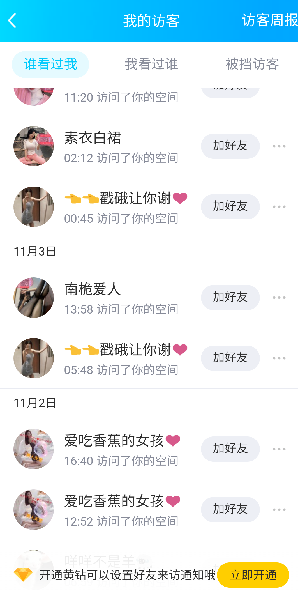

我不适合活在现实里，我只是一个孤独的技术宅。所以我会说出这样的话：”大家都在虚拟的世界了，一片和谐的现实已经难以找回了。”不过更让我难受的事，互联网也整顿的和现实差不多，无非就是披上了一层虚拟的外皮罢了。现实有无法摸透的人心和背后难以想象的故事，互联网也同样存在巨大的深网与庞大的利益链条，加上其虚拟性，就真得变得比现实还要复杂了。
举个比较通常的例子就是，比起开源免费软件，人们更愿意去使用有可能被注入病毒的商业软件的破解版，有时其实怪不得他们，我更愿意相信他们是不良广告的受害者。
其实我更想说的互联网的一条灰色产业链——黄赌。没有毒哦！大家都是老司机了，都应该知道这两个为什么要一起说了，需求量庞大，怎么都是禁不住的。我想先把一段我看过的文章先摘录过来(怕以后没了)
相信很多男同胞都曾经或多或少地接触过同城交友类的网站，网站上一个个美丽的身影甚至让目不暇接的男同胞们激动不已。然而这些美丽的身影好像总是给人一种可见不可求的感觉，她们真的是真实存在的吗？我们有一个学员曾经从事过交友软件的开发，同城交友网站的真实情况，其实和大家想象的情况是有一些差异的： 这个程序员学员最早是高中时候开始做IDC域名注册，以及真正的B2C电子商务的，而不是淘宝店。那时还是2006年。后来小打小闹的也赚了点钱，偶尔一次接到了网站开发的活。当时觉得这可比卖域名和服务器空间，一个利润只有10到20元要赚钱的多。
很惭愧的告诉你，他接到的第一个网站开发是做的内涵网站，一个外国的客户让他开发的，价格也不贵，不到1千块钱，很廉价。但对于高中狗来说，已经让他高兴的屁颠了。后来那个客户用他的程序一个月就赚了1千美金的广告费。 程序很简单，赚钱模式也很简单，网站会千方百计赚取所有访客带来的经济效益。具体是：首页添加一个播放器，视频加载到99.9％提示浏览器版本低，然后系统推荐一个浏览器继续观看。用户安装了火狐浏览器后，网站收益0.1-8美金。没错！是美金。 然后，这时候网站会直接让访客从口袋里掏钱了，这是第二次榨取：那时候流行SP短信增值业务，通过广告联盟吸收话费。相信你们都遇到过。 就这样，那年很多人用这种最简单的模式买了房开了宝马，当然程序是我这个学员开发的，他依然没钱，那年他高三学生狗自然没这个勇气去做这件事。 在写这篇文章之前，以前有一个用户刚刚联系我的学员了，因为他的例子很特别，所以我才把他重点写一下。
相信很多人都通过广告或者QQ群收到过类似内涵交友的网站广告。说是交友，点击进入一看就是类似约约约的交友。 注册一个账号后，时不时有同城本地的美女给你打招呼，或者发暧昧信息。如果需要查看联系方式，就需要付钱充值金币或者办理VIP会员了。一般VIP的种类有一个月、半年、一年和永久；价格也在100元到1000元不等。 交友网很活跃：日记、约会记录、图片、还有本地的美女给你发消息；个人状态不是单身就是想找人喝一杯，或者进一步发展也可以。嘿嘿嘿，你是不是动心了？ 如果你下半身激动了，脑袋被荷尔蒙装满了，那么你就是个被宰的凯子！ 这种程序的规则是这样的：女会员有绝对权限，男会员没有权限。也就是说，你注册男会员是不能查看消息的，无法直接与女会员产生对话。但女会员可以给你发消息，要是想看你就付费吧。 但是，这不是高潮…… 高潮在于，让你激动的并不是真实的女会员，他会增加一个计划任务的程序，批量注册很多美女会员的小号，全国各地都有，批量换头像，签名……这些是小意思，程序还可以无人值守全自动给注册的男会员发消息，男会员地址假如是上海地区，那么大部分发消息和打招呼的女会员就是上海的。
你会觉得这个网站人气这么旺啊！当你有这个错觉后，你步入凯子的行列只有一步之遥了。 凯子也分为好几类，大多数是不愿意花钱又想寻找刺激的屌丝凯子，还有一部分是几百块不在乎只要能约到。这时候程序设计上要兼顾这些人群。不愿意花钱的好办，你得帮着网站推广多少人之后，才能获得少的可怜的金币邮票或者临时VIP体验权限，以此来减少网站推广成本。 一般推广10个人注册，网站推广成本在10元到200元之间，你去做免费推广网站就零成本了。第二类用户直接就付费了，一般都是年费或永久。假设网站一天只有一个人付费，一次500元，一个月就是1万5的盈利；更别说一天10个、20个…… 这种网站一般都舍得打广告，你现在去百姓网啊、58同城去看看，虽然现在的人也没以前那么傻了，但还有很多这样的广告。因为实在是暴利的很，很多这类网站有自己的运营团队。
会员也从最开始这种简单模式发展成稍具规模了，后来有个别做得好的，就不需要用无人值守的马甲女号了，因为女性会员通过积累已经达到了规模，摇身一变成了正规的交友中心，也就真的能约到了，我们就不具体点名是哪个网站了。 网站为了规避法律风险是禁止露点明确禁止ONS的，但是你懂得…… 我的这个学员是不参与运营的，他只是负责开发维护这些网站。并且收取一定的费用。比如某个网站需要新功能了，某些网站数据有问题了，充值充不上了，支付宝接口变更了，自动计划任务不运行了或者感觉不真实有更好的方案了等等。 所以网站站长们也会告诉他运营过程中遇到的问题，告诉他如何改进程序，以及会员情况和充值情况等等，这些他都是可以通过数据库看到。不过，他仍然是个穷逼。我在之前讲过，商人是从来不种西瓜的，商人只是西瓜的搬运工。很明显，这个学员以前是种西瓜的，不是卖西瓜的。
这些站长们每天做的并不是网站的更新和维护上，他们主要做的工作就是推广。Googleadwords，百度竞价，CPA广告投放，弹窗广告收购，流量购买。然后睡着觉就能赚钱……他们问我的学员为什么不做，他说他没时间，也没这个头脑，其实最重要的是他怕给自己带来麻烦…… 这些人实际上都是随意圈钱，凯子们被圈了钱也不知道是怎么被圈的，明明有很多女性会员，明明也充值了，但是发了消息女会员不理睬，或者理睬了但约不出来。为什么就约不到妹纸呢？那你就得在自己身上找原因了。你肯定想不到是网站做了手脚…… 哈哈哈！！！ 后来程序又升级了。让数据变得更加真实。不但有女号给你打招呼，而且你注册了会员之后还能跟你聊两句。最开始调用的是聊天机器人的接口，这个比较搞笑。
傻逼都知道这是机器人聊天的，后来程序又改进了。后来改进的是人工手动回复，这样就更真实了。 站长后台可以集中显示所有真实的会员给美女发的消息，这时候只需要逐条回复就可以了，更加真实，完全是真人聊天。有时候会处理几百个人的聊天信息。 所以VIP会员感觉到确实是真实的会员，但是话很少，比较难泡（一般陌生人聊天，妹纸不都是话很少么？更加真实了）。但凯子们并不知道的是，有人控制着聊天，跟你聊天的很可能是站长，或者站长从哪里雇来的大学生而已…… 也就是说你永远约不到妹纸。 哈哈哈哈……
再说说主流交友相亲网站，也就是严肃相亲网。珍爱某某，世纪某某，这些网站我保证10年前最开始运营的时候也会用到同类型的手段的。只不过后来从良了，并且越做越大、越做越正规了，当然这是后话了。 做内涵交友的网站，据我知道的也有做起来后就弃恶从良的。因为规模上来了就不需要靠这些小伎俩赚钱了。一个月仅仅广告费最起码都够你买辆奔驰了。 有钱的人，虽然做的是正经生意，哪一个又能保证不是靠点小门道白手起家的呢？很多有钱的人最开始的钱也并不是很白,否则也不会成为暴发户。赚钱需要智力、胆识和手段，普通人对金钱从来不缺乏渴望，只是让他们去实现梦想时，他们总是会因为总总原因望而却步；而强者一旦发现机遇，则直接开干，这就是普通人和有钱人最大的差别。
其实还有些图片，只是懒得搞，文字的提取本来就够麻烦了。不过作者对它学员的一句话，我觉得值得一写——“聪明的人把重点放在营销上，他们只关注发广告收钱，而你却把重点放在技术上，你把技术做得再牛逼，你也只是为别人赚钱，并且你还以为自己会技术而洋洋得意。因为你是一个傻逼，所以导致你是一个穷逼。”
我自己也曾经试过水，具体怎么做其实挺难的。自己找的话，因为国家的各种政策与正义人们，还是需要许多手段的，有时甚者只能在被骗的层面。有时就是真正开源分享者被资本主义利益结构的墙给挡住了。比如你经常的某些行为，就会被认为是潜在用户被盯上。

可能是我误会了，不过就当那么一回事吧。可惜我不是业内人士，进不了营销方，不过我确实当过推销方，在什么都不知道的情况下白打工。其实营销方或许和我们一样，信不过陌生人，比较核心的工作肯定都不可能是外人。
总之，就是比较失败吧，但没完全失败，还算是可以。说了这么多，我其实只想表达自己的无奈。一般现实不行的时候，我们就只能去依靠虚拟了，但与现实同样美好正常的世界，又怎么好提出”异类”的想法呢？
“沉默的大多数”我很喜欢的一句话。类似地，我得到人群分类的说法。你在网上看到的，只是那些会在网上表达的人的想法，当然如果有个公理承认人都会表达自己，就另当别论了。
深网难以捉摸，不要以为自己看了许多东西，就觉得自己站在人类至高点了，表面上或许表现得挺谦虚的，但事实如何我也不知道。总之，记住，你所看到的网络只是现实的一部分，还有许多深网之下的东西，和沉默大多数的想法，你怎么也得不到的。